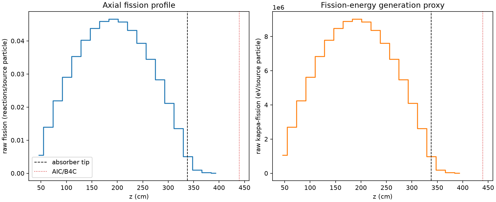
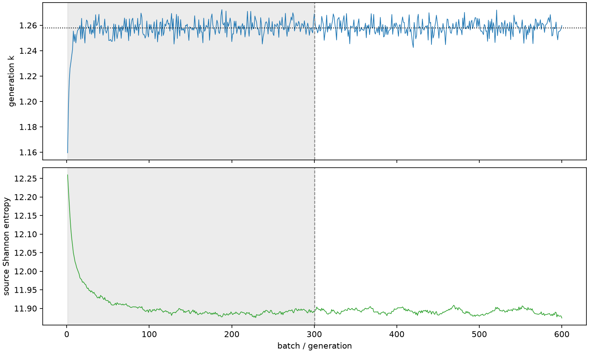

| field | value |
|---|---|
| experiment | V2-STAGE_128_OGRENCI_03-0019 |
| k | 1.2580296048858484 |
| MC standard error | 0.000176528443283247 |
| seconds | 964.1424338720026 |
| acceptance | not_assessed |
| convergence | review_required |
Completed is output integrity only; physical and statistical review required. Zero tallies do not prove zero production or zero uncertainty.
| diagnostic | value |
|---|---|
| geometric fuel voxels | 5280 |
| zero fission tally voxels | 0 |
| low signal fuel voxels | 185 |
| low signal fission share | 6.90099984501913e-05 |
| low signal kappa share | 6.90374802283879e-05 |
| important fission share | 0.9500105528608942 |
| previous filter included | 5095 |
| duration estimate s | 1562.5173488400023 |
| actual minus estimate s | -598.3749149679998 |
| fission relative MC error | statistics |
|---|---|
| all_geometric_fuel | {"voxels": 5280, "positive_mean_voxels": 5280, "zero_mean_voxels": 0, "undefined_relative_error_voxels": 0, "median": 0.010230768116876765, "p95": 0.13222472100884144, "maximum": 0.3373475686785421} |
| low_signal | {"voxels": 185, "positive_mean_voxels": 185, "zero_mean_voxels": 0, "undefined_relative_error_voxels": 0, "median": 0.22620188403473515, "p95": 0.28682444394191337, "maximum": 0.3373475686785421} |
| important_95pct | {"voxels": 3685, "positive_mean_voxels": 3685, "zero_mean_voxels": 0, "undefined_relative_error_voxels": 0, "median": 0.008969524628777268, "p95": 0.013946313351626253, "maximum": 0.01642977980688315} |
| outside_previous_filter | {"voxels": 185, "positive_mean_voxels": 185, "zero_mean_voxels": 0, "undefined_relative_error_voxels": 0, "median": 0.22620188403473515, "p95": 0.28682444394191337, "maximum": 0.3373475686785421} |
| kappa_fission relative MC error | statistics |
|---|---|
| all_geometric_fuel | {"voxels": 5280, "positive_mean_voxels": 5280, "zero_mean_voxels": 0, "undefined_relative_error_voxels": 0, "median": 0.01021975598939565, "p95": 0.13197078072962368, "maximum": 0.3367918226833347} |
| low_signal | {"voxels": 185, "positive_mean_voxels": 185, "zero_mean_voxels": 0, "undefined_relative_error_voxels": 0, "median": 0.22579008940441356, "p95": 0.2863736479495504, "maximum": 0.3367918226833347} |
| important_95pct | {"voxels": 3685, "positive_mean_voxels": 3685, "zero_mean_voxels": 0, "undefined_relative_error_voxels": 0, "median": 0.008959371037529378, "p95": 0.013932870126130786, "maximum": 0.016411745174432224} |
| outside_previous_filter | {"voxels": 185, "positive_mean_voxels": 185, "zero_mean_voxels": 0, "undefined_relative_error_voxels": 0, "median": 0.22579008940441356, "p95": 0.2863736479495504, "maximum": 0.3367918226833347} |
| axial bin | fission share | kappa-fission share |
|---|---|---|
| 1 | 0.010639153608235793 | 0.010639716141400161 |
| 2 | 0.02714402482832933 | 0.027143957691356146 |
| 3 | 0.04258553927841299 | 0.04258528877574668 |
| 4 | 0.05655995275728645 | 0.056559794934894096 |
| 5 | 0.06863968264342343 | 0.06863952113683729 |
| 6 | 0.07823085272064194 | 0.07823064297723288 |
| 7 | 0.08518017515618395 | 0.08518003393955745 |
| 8 | 0.0893459479600365 | 0.08934581946909842 |
| 9 | 0.09057737962146768 | 0.09057726068175585 |
| 10 | 0.08898420049141685 | 0.08898390399874273 |
| 11 | 0.08398064654438457 | 0.08398055339877333 |
| 12 | 0.07640028328568742 | 0.07640016862044603 |
| 13 | 0.06700210878215739 | 0.06700187443044278 |
| 14 | 0.054945728439129975 | 0.054945404289515026 |
| 15 | 0.04110593903754531 | 0.04110592868918052 |
| 16 | 0.026305970734492756 | 0.026305800801364604 |
| 17 | 0.009840299607380183 | 0.009841313742645352 |
| 18 | 0.0019526269929248162 | 0.0019533137634739446 |
| 19 | 0.00048109984264247915 | 0.000481271622961943 |
| 20 | 9.838766822014154e-05 | 9.843089457483797e-05 |
Histories include the inactive-to-active transition at batch 300. kappa-fission approximates fission energy production, not total heat deposition.

